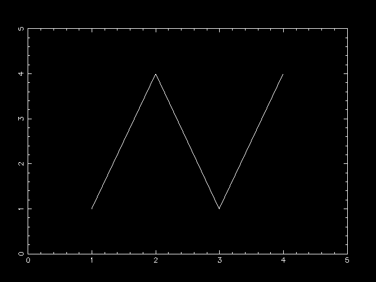

Ruby/PGPLOTで折れ線グラフを描く最小限のスクリプトは、以下のようになります。
require 'narray' require 'pgplot' include Pgplot pgopen # デバイスを開く pgenv( 0, 5, 0, 5 ) # 枠の設定と描画 pgline( [1,2,3,4], [1,4,1,4] ) # 折れ線の描画
以下このスクリプトについて詳しく説明します。 1行目、2行目で拡張ライブラリをロードします。
3行目では Pgplotモジュールをインクルードしています。 これをしないと Pgplotのメソッドを呼ぶとき、``Pgplot.pgopen'' というように モジュール名をメソッドの前に省略しないで書かなければなりません。 インクルードするかどうかは場合によります。 Pgplotモジュールのメソッド名は(今のところ)皆 ``pg'' で始まっているので、 気をつければ名前がぶつかる確率は低いと思いますが、 確実を期すならインクルードしない方がよいかもしれません。
4行目の pgopen で PGPLOT のグラフィクスデバイスを開きます。 ここで引数を書かないと使用するデバイスを聞いてきます。
Graphics device/type (? to see list, default /xwin):
デフォルトのままで良ければ単にリターンキーを押します。 デフォルトのデバイスは環境変数 PGPLOT_DEV で設定したものになっています。 `?'とリターンを打ち込むと、使用できるデバイスの一覧が表示されるので、 その中から別のデバイスを選択することもできます。 例えば、PNGとしてファイルに書き出したいときは、 ``plot1.png/png'' のように「ファイル名/デバイス名」というように指定します。
5行目の
pgenv( 0, 5, 0, 5 )
により、グラフの軸を決定し、枠と目盛を描画します。 引数は x-min, x-max, y-min, y-max の順です。 ここではX軸が0から5、Y軸が0から5までの範囲の枠を描きます。 以降はここで設定された座標をもとに描画します。
そしていよいよ、6行目の
pgline( [1,2,3,4], [1,4,1,4] )
で、折れ線グラフを描きます。 引数には線を結ぶ点のX座標とY座標をそれぞれ配列で渡します。
ここまで成功すれば、このようなグラフが描かれているはずです。

以上が折れ線グラフを描くのに最低限必要なメソッドです。
ところで、このスクリプトにはデバイスを閉じるメソッドがありません。 CかFORTRAN版のPGPLOTであれば、 ここで最後に pgend を呼んでデバイスを閉じる必要があります。 そうしないと、デバイスが Postscript などのとき、 終了処理がされないので、不完全なファイルができてしまいます。 しかし Ruby/PGPLOTでは、Rubyインタプリタ終了時に pgend を自動的に呼ぶようになっているので、 必ずしも最後に pgend を呼ぶ必要はありません。 ただしRubyの実行途中でPGPLOTを終了したいときのために Ruby版でも pgend メソッドは用意してあります。
以下続く(かもしれない)